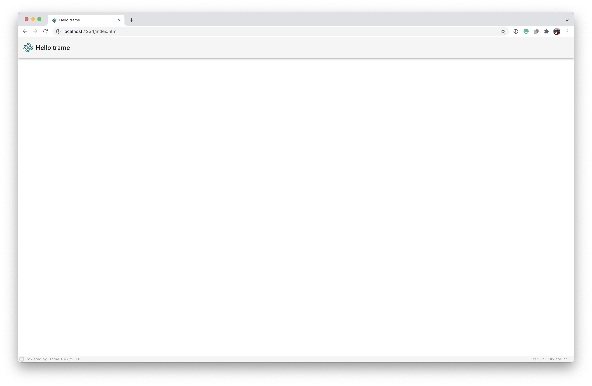

Setup the VTK environment
trame requires Python 3.6+ but since ParaView 5.11 is bundling Python 3.9 we will use Python 3.9 in this tutorial.
python3.9 -m venv .venv |
Notes:
venvwas added in Python 3.3.- On a Mac with ARM architecture, VTK is only available with Python 3.9.
Running the application
python ./00_setup/app.py --port 1234 |
Your browser should open to http://localhost:1234/

Notes:
- The default port is 8080, but since this is very common we will use 1234 for our Tutorial.
- If you are running this on a remote machine, you may have to set the host to 0.0.0.0 to allow any external connection. (
python ./app.py --port 1234 --host 0.0.0.0)
Annotation of Hello trame Application
We start by importing the basic building blocks for our client-server application.
from trame.app import get_server |
from trame‘s app, we import the factory function for retrieving a server instance on which we will bind our UI and business logic. We also import a skeleton for a single page client application that relies on vuetify (our main widget library) from trame.ui.vuetify.
Next, we define the graphical user interface (GUI) by passing the server to which it should be bound. Then with that layout we update the toolbar’s title to read "Hello trame".
server = get_server() |
Finally, we start the Web server using:
if __name__ == "__main__": |
start can take an optional argument of a port number. However, this can be set with command-line arguments (--port 1234).
Running the Application
$ python ./00_setup/app.py --port 1234 |
Your browser should open automatically to http://localhost:1234/.